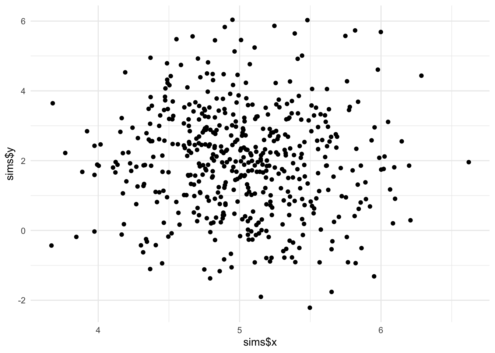

leapfrog_step <- function(gradient, step_size, position, momentum, d) {
momentum1 <- momentum + gradient(position) * 0.5 * step_size
position1 <- position + step_size * momentum1
momentum2 <- momentum1 + gradient(position1) * 0.5 * step_size
matrix(c(position1, momentum2), ncol = d*2)
}Introduction
Determining the posterior distribution for the parameters of a real-world Bayesian model inevitably requires calculating high-dimensional integrals. Often these are tedious or impossible to calculate by hand. Markov chain Monte Carlo (MCMC) algorithms are popular approaches, samplers such as the Gibbs sampler can be used to sample from models with conditionally conjugate specifications and the Metropolis-Hastings algorithm can be used when the conditionally conjugate form is not present.
There are downsides to these established methods, Gibbs sampling puts a restrictive form on the prior distribution. Although Metropolis-Hastings (MH) allows any prior distribution from which the probability density function can be evaluated, the proposal distribution is often a multivariate Normal distribution with mean corresponding to the previous value of the parameters. This proposal results in random walk behaviour and although the MH algorithm is guaranteed to converge it can take a long time to get satisfactory draws from the posterior distribution.
The gradient of the un-normalised log-posterior distribution can be used to explore the posterior distribution more efficiently. Hamiltonian Monte Carlo (HMC) is an MCMC method which utilises a discretisation of Hamilton’s equations in order to model a physical system where the parameters are represented by the position of a particle in \(\theta \in \mathbb{R^d}\). In order to implement HMC, the posterior distribution is augmented with a momentum vector, \(\phi\), which is used to propose updates to the position which can be far away from the initial position.
HMC in R
Hamilton’s equations are discretised and a “leapfrog” update is used. These leapfrog steps can be written as:
leapfrogs <- function(gradient, step_size, l, position, momentum, d) {
for (i in 1:l) {
pos_mom <- leapfrog_step(gradient, step_size, position, momentum, d)
position <- pos_mom[seq_len(d)]
momentum <- pos_mom[-seq_len(d)]
}
pos_mom
}The log-acceptance can be written as:
log_acceptance <- function(propPosition,
propMomentum,
position,
momentum,
log_posterior) {
log_posterior(propPosition) + sum(dnorm(propMomentum, log = T)) -
log_posterior(position) - sum(dnorm(momentum, log = T))
}In order to propose a new set of parameters a random momentum vector is drawn from the Normal distribution and used in the leapfrog steps. To ensure detailed balance and that the stationary distribution of the Markov chain is equivalent to the target distribution, a metropolis step is used accepting the newly proposed parameters with log-probability equal to the log_acceptance defined above. To implement this in R, we compare a log uniform random number to the log acceptance criteria. A single HMC step can be written as:
hmc_step <- function(log_posterior, gradient, step_size, l, position) {
d <- length(position)
momentum <- rnorm(d)
pos_mom <- leapfrogs(gradient, step_size, l, position, momentum, d)
propPosition <- pos_mom[seq_len(d)]
propMomentum <- pos_mom[-seq_len(d)]
a <- log_acceptance(propPosition, propMomentum, position, momentum, log_posterior)
if (log(runif(1)) < a) {
propPosition
} else {
position
}
}The HMC algorithm can be written as
hmc <- function(log_posterior, gradient, step_size, l, initP, m) {
out <- matrix(NA_real_, nrow = m, ncol = length(initP))
out[1, ] <- initP
for (i in 2:m) {
out[i, ] <- hmc_step(log_posterior, gradient, step_size, l, out[i-1,])
}
out
}An Example Model: Bivariate Normal Model
The same bivariate Normal model from a previous post implementing the Metropolis algorithm is used. See that post for details of deriving the log-likelihood and choice of prior distributions for the parameters.

From the previous post, the log-posterior distribution is the sum of the log-prior and the log-likelihood. The log-likelihood is given by:
\[\log p(y|\mu, \Sigma) = \sum_{j=1}^2\left(-\frac{N}{2}\log(2\pi\sigma_{j}^2) - \frac{1}{2\sigma_{j}^2}\sum_{i=1}^N(y_{ij}-\mu_j)^2\right)\] Where \(\Sigma = \operatorname{diag}(\sigma_1, \sigma_2)\), the prior distributions are chosen to be:
$$\[\begin{align} p(\mu_j) &= \mathcal{N}(0, 3), \\ p(\sigma_j) &= \textrm{Gamma}(3, 3), \quad j = 1, 2. \end{align}\]$$
The log-pdf of these distributions are:
\[\begin{align} \log p(\mu_j) &= -\frac{1}{2}\log(18\pi)-\frac{\mu_j^2}{18} \\ \log p(\sigma_j) &= \alpha\log(\beta)-\log(\Gamma(\alpha)) + (\alpha-1)\log(\sigma_j)-\beta \sigma_j \end{align}\]
The gradient of the log-posterior with respect to each of the paramters can be written as:
$$\[\begin{align} \frac{\partial \ell}{\partial \mu_j} &= \frac{1}{\sigma_j^2}\sum_{i=1}^N(y_{ij}-\mu_j) - \frac{\mu_j}{9}, \\ \frac{\partial \ell}{\partial \sigma_j} &= -\frac{N}{\sigma_j} + \frac{1}{\sigma_j^3}\sum_{i=1}^N(y_{ij}-\mu_j)^2 + \frac{2}{\sigma_j}-3, \quad j = 1, 2. \end{align}\]$$
In R the gradient can be programmed by hand:
gradient <- function(ys) {
function(theta) {
mu <- c(theta[1], theta[3])
sigma <- c(theta[2], theta[4])
n <- nrow(ys)
c(1/sigma[1]^2*sum(ys[,1] - mu[1]) - mu[1]/9,
-n/sigma[1] + sum((ys[,1] - mu[1])^2) / sigma[1]^3 + 2/sigma[1] - 3,
1/sigma[2]^2*sum(ys[,2] - mu[2]) - mu[2]/9,
-n/sigma[2] + sum((ys[,2] - mu[2])^2) / sigma[2]^3 + 2/sigma[2] - 3)
}
}To ensure the value of the gradient is correct we can compare it to a numerical approximation of the gradient using the https://cran.r-project.org/web/packages/numDeriv/numDeriv.pdf package:
approx_gradient <- function(xs, theta) {
grad(log_posterior(xs), theta)
}
compare_gradient <- function(theta, tol) {
abs(gradient(xs)(theta) - approx_gradient(xs, theta)) < tol
}
compare_gradient(theta, 1e-3)[1] TRUE TRUE TRUE TRUEIt appears the calculated derivative is correct. Next, HMC works best when the leapfrog proposal can propose unconstrained values of the parameters which lie on the whole real line. A transform function is defined for the parameters, \(\theta\) which calculates the exponential of the standard deviation parameters. The log-posterior is calculated using the transformed values, the appropriate transformation and inverse transformation functions can be written as:
transform <- function(theta) {
c(theta[1], exp(theta[2]), theta[3], exp(theta[4]))
}
inv_transform <- function(theta) {
c(theta[1], log(theta[2]), theta[3], log(theta[4]))
}The leapfrog step proposal is calculated using the unconstrained parameters, hence the derivative of the log-jacobian of the transformation is required to be added to the value of the gradient of the log-density. Then the derivative of the log-jacobian is calculated to get the value of the gradient corresponding to the unconstrained parameters in the leapfrog step.
log_jacobian <- function(theta) {
c(0, theta[2], 0, theta[4])
}
deriv_log_jacobian <- function(theta) {
c(0, 1, 0, 1)
}The derivative of the log-jacobian contributes the value 1 to each of the partial derivatives \(\frac{\partial \ell}{\partial \sigma_j}, j = 1, 2.\)
# evaluate the log-posterior on the appropriate scale, using the transform function
bounded_log_posterior <- function(xs) {
function(theta) {
log_posterior(xs)(transform(theta)) + sum(log_jacobian(theta))
}
}
bounded_gradient <- function(xs) {
function(theta) {
gradient(xs)(transform(theta)) + deriv_log_jacobian(theta)
}
}The HMC algorithm can be run in parallel using the furrr package as described in my post about the Metropolis algorithm. First the hmc function is used in another function which returns a dataframe called hmc_df.
hmc_df <- function(log_posterior, gradient, step_size, l, initP, m, parameter_names) {
mat <- hmc(log_posterior, gradient, step_size, l, initP, m)
colnames(mat) <- parameter_names
as.data.frame(mat) %>%
mutate(iteration = row_number())
}Then the function is used in future_map_dfr:
future::plan(future::multiprocess)Warning: Strategy 'multiprocess' is deprecated in future (>= 1.20.0). Instead,
explicitly specify either 'multisession' or 'multicore'. In the current R
session, 'multiprocess' equals 'multicore'.start_time <- Sys.time()
out_hmc <-
furrr::future_map_dfr(
.x = 1:2,
.f = function(x)
hmc_df(
bounded_log_posterior(xs),
bounded_gradient(xs),
0.01,
4,
inv_transform(theta),
10000,
c("mu1", "sigma1", "mu2", "sigma2")
),
.id = "chain"
)Warning: UNRELIABLE VALUE: Future ('<none>') unexpectedly generated random
numbers without specifying argument 'seed'. There is a risk that those random
numbers are not statistically sound and the overall results might be invalid.
To fix this, specify 'seed=TRUE'. This ensures that proper, parallel-safe random
numbers are produced via the L'Ecuyer-CMRG method. To disable this check, use
'seed=NULL', or set option 'future.rng.onMisuse' to "ignore".Warning: UNRELIABLE VALUE: Future ('<none>') unexpectedly generated random
numbers without specifying argument 'seed'. There is a risk that those random
numbers are not statistically sound and the overall results might be invalid.
To fix this, specify 'seed=TRUE'. This ensures that proper, parallel-safe random
numbers are produced via the L'Ecuyer-CMRG method. To disable this check, use
'seed=NULL', or set option 'future.rng.onMisuse' to "ignore".end_time <- Sys.time()
hmc_time <- end_time - start_timeThe traceplots of both chains are plotted below.
Evaluating the efficiency
In order to compare between Markov chain Monte Carlo algorithms the amount of information from each correlated sample can be measured. This is termed the effective sample size, corresponding to the number of effectively independent draws from the posterior distribution. The code below calculates the ESS of each parameter in the chain using ess_bulk from the R interface to stan rstan library. The ESS per second can be calculated which is a measure of the efficiency of the sampler
out_hmc %>%
summarise_at(2:5, rstan::ess_bulk) %>%
mutate_all(~ . / as.numeric(hmc_time)) mu1 sigma1 mu2 sigma2
1 10169.87 3713.415 1147.888 4983.936This could be compared to a similar method, such as the Metropolis algorithm. To determine which algorithm is the most efficient for sampling from the posterior distribution of the bivariate Normal model.
proposal <- function(x) {
z = rnorm(4, sd = 0.05)
c(x[1] + z[1], x[2] * exp(z[2]),
x[3] + z[3], x[4] * exp(z[4]))
}
names(theta) <- c("mu1", "sigma1", "mu2", "sigma2")
start_time <- Sys.time()
out_met <- metropolis(theta, log_posterior(xs), proposal, 1e4, chains = 2, parallel = TRUE)Warning: UNRELIABLE VALUE: Future ('<none>') unexpectedly generated random
numbers without specifying argument 'seed'. There is a risk that those random
numbers are not statistically sound and the overall results might be invalid.
To fix this, specify 'seed=TRUE'. This ensures that proper, parallel-safe random
numbers are produced via the L'Ecuyer-CMRG method. To disable this check, use
'seed=NULL', or set option 'future.rng.onMisuse' to "ignore".Warning: UNRELIABLE VALUE: Future ('<none>') unexpectedly generated random
numbers without specifying argument 'seed'. There is a risk that those random
numbers are not statistically sound and the overall results might be invalid.
To fix this, specify 'seed=TRUE'. This ensures that proper, parallel-safe random
numbers are produced via the L'Ecuyer-CMRG method. To disable this check, use
'seed=NULL', or set option 'future.rng.onMisuse' to "ignore".end_time <- Sys.time()
metropolis_time <- end_time - start_timeThe ESS/s can be computed for the Metropolis algorithm
out_met %>%
summarise_at(2:5, rstan::ess_bulk) %>%
mutate_all(~ . / as.numeric(metropolis_time))# A tibble: 1 × 4
accepted mu1 sigma1 mu2
<dbl> <dbl> <dbl> <dbl>
1 12850. 1780. 1052. 424.Citation
BibTeX citation:
@online{law2019,
author = {Jonny Law},
title = {Hamiltonian {Monte} {Carlo} in {R}},
date = {2019-07-31},
langid = {en}
}
For attribution, please cite this work as:
Jonny Law. 2019. “Hamiltonian Monte Carlo in R.” July 31,
2019.